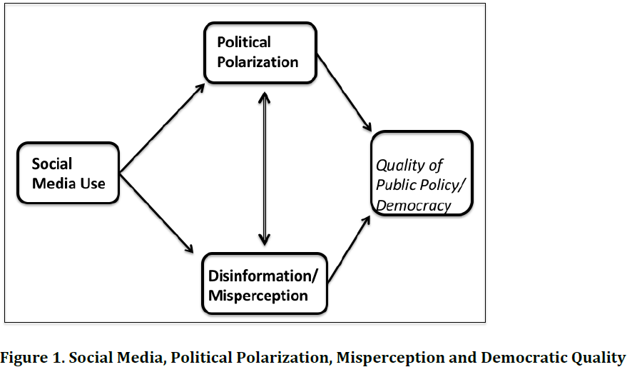
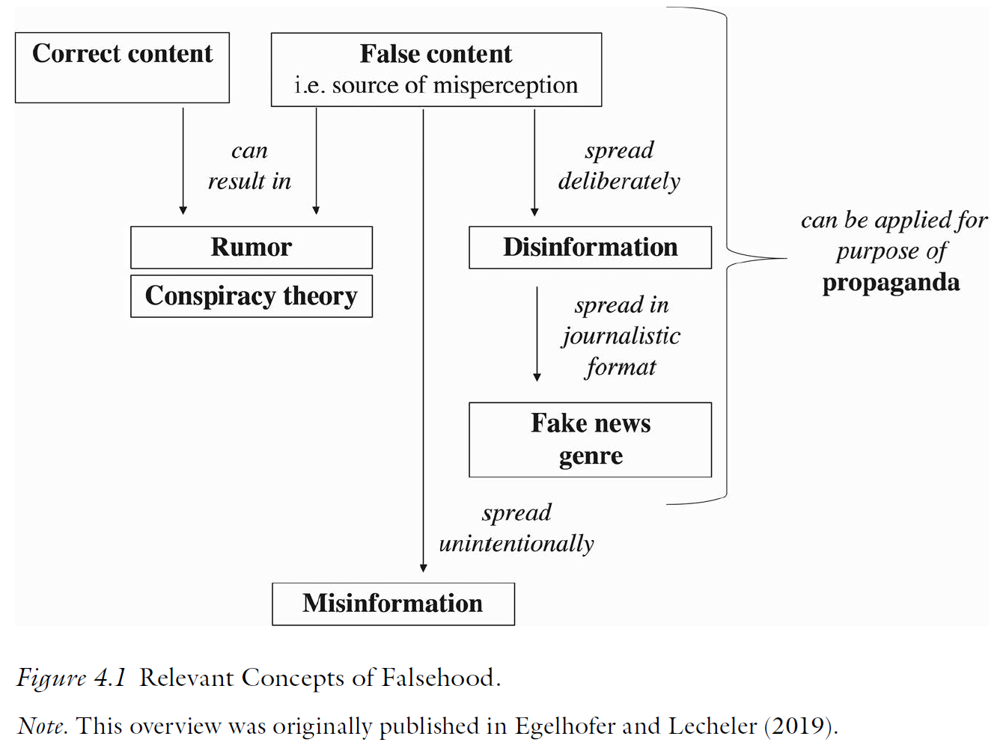
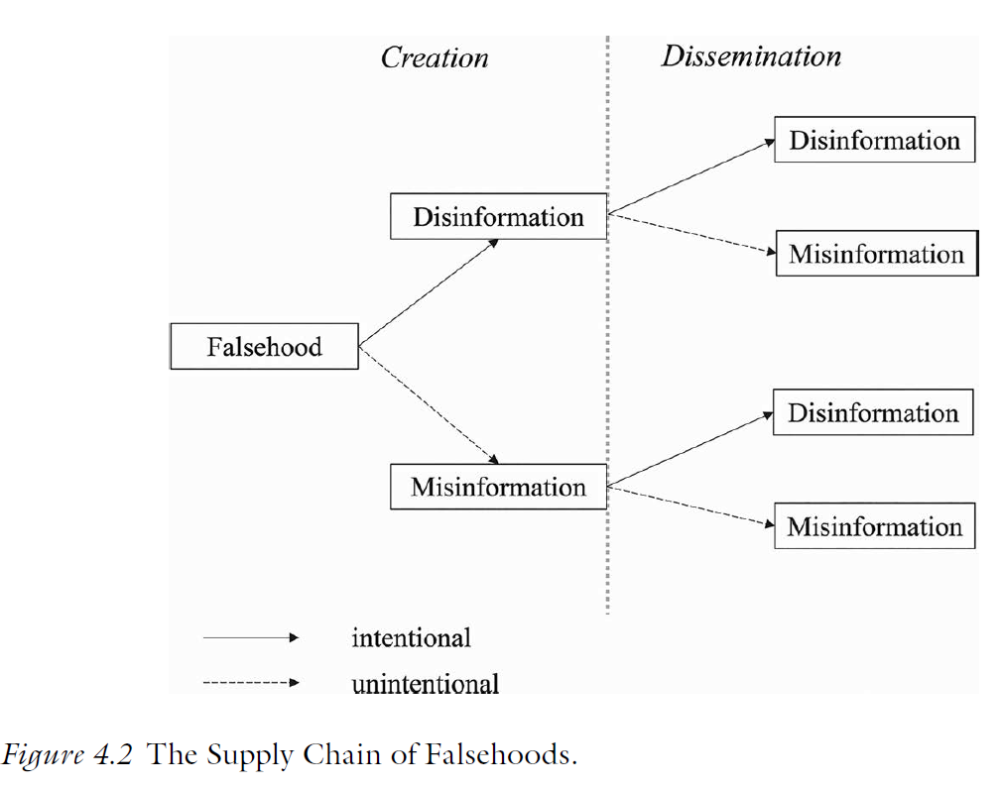

Media Change and Disinformation
The Politics of Democratic Backsliding
Session 11
University of Lucerne
Introduction
The role of the media environment
Democratic backsliding can be theorized as the result of supply-side (politicians) and demand-side (citizens) interactions
- The media environment is not purely supply- or demand-side, but rather shapes these interactions
From a supply-side perspective: media ownership concentration as a tool of backsliding (Session 05)
From a demand-side perspective: the shift to online and social media environments has grown concerns about citizens’ political information, beliefs, and behavior
This session’s goals
- Understand the shift in the media environment and the new challenges it poses
- Clarify the notions of misinformation, disinformation, and fake news
- Debate the role of media change for democratic backsliding
- Students’ presentation: the case of the Philippines
The media environment shift
From offline to online media
Tucker et al., 2018
The rise of social media has fundamentally transformed how citizens encounter political information
- Anyone can now broadcast to large audiences at near-zero cost; traditional gatekeepers (editors, broadcasters) have lost their monopoly on political communication
- This creates new opportunities for political engagement but also for the spread of misinformation, propaganda, and polarizing content
Tucker et al. (2018) review and summarize a series of contested research topics on social media and democracy

1. Online political conversations
Tucker et al., 2018
What it is: political discussion and information sharing on social media platforms
What we know: exposure to diverse viewpoints online is higher than often assumed; echo chambers are less prevalent than the conventional narrative suggests
What we don’t know: whether cross-cutting exposure improves political reasoning or simply produces more negative, uncivil interactions; how platform design shapes conversation quality
2. Disinformation and propaganda
Tucker et al., 2018
What it is: false or misleading political content spread online; includes fake news, rumors, hyperpartisan content, and foreign-state-sponsored propaganda (more on definitions later)
What we know: misinformation was widely shared during the 2016 US election; fake news reached large audiences; exposure is concentrated among heavy partisan media consumers
What we don’t know: the causal effect of exposure on political knowledge, attitudes, and vote choice; effect sizes are likely smaller than journalistic accounts suggest
3. Producers of disinformation
Tucker et al., 2018
What it is: the actors who create and spread false political content, including politicians, foreign states, partisan media outlets, bots, and ordinary citizens
What we know: automated accounts (bots) amplify disinformation; foreign actors (Russia, others) have actively spread divisive content; politicians themselves create and amplify disinformation
What we don’t know: the proportion of disinformation produced by each actor type; actual electoral impact of foreign interference; most data held by private platforms
4. Strategies and tactics
Tucker et al., 2018
What it is: how disinformation is spread; amplification via bots, coordinated inauthentic behavior, astroturfing, emotional framing, platform algorithm exploitation
What we know: bots amplify content to make fringe views appear mainstream; emotional (especially outrage) content spreads faster and further; social fact-checking by citizens is generally ineffective
What we don’t know: relative effectiveness of different tactics; how much coordination is required for large-scale effects; how tactics differ across platforms
Political misinformation
Misinformation is not new
False political beliefs predate social media; the phenomenon is old, the scale and speed are new
- There are concerns about the role of systematic political misperceptions for democracy since the early 2000s: whether citizens held confidently wrong beliefs that shaped their policy preferences and behaviour
What has changed with social media:
- Speed and scale of dissemination
- Intentional production at industrial scale, including by state actors
- The weaponization of the “fake news” label to undermine trust in all information
Defining the terms
Lecheler & Egelhofer, 2022
Misinformation: incorrect or misleading information disseminated unintentionally; the actor does not need to know it is false
Disinformation: incorrect or misleading information disseminated intentionally; the actor knows it is false and intends to deceive
Fake news genre: a specific form of disinformation that mimics journalistic format using digital technologies; not just false, but designed to look like legitimate news

The supply chain of falsehoods
Lecheler & Egelhofer, 2022
The supply chain has two stages: creation and dissemination; actors at each stage may have different intentions
Three main actor types involved in the supply:
- Political actors: use disinformation strategically; populists weaponize “fake news” label to delegitimize legacy media
- Media actors: can spread misinformation through sloppy journalism or sensationalism; some deliberately produce false content
- Citizens: unintentionally share false content
Importantly, disinformation can be re-shared unintentionally, turning it into misinformation at the point of dissemination

Your responses I
“[The paper] does not provide solid empirical data on the actual amount of false information in circulation.” (Jean-Philippe Heusser)
“[It] does also not show which actors (politicians, media, citizens) matter most in practice.” (Jean-Philippe Heusser)
“[It] offers only limited evidence about the real impact of false information on citizens and on democratic processes.” (Jean-Philippe Heusser)
“The paper does not examine sufficiently how false information differs across countries, political regimes, and media systems.” (Jean-Philippe Heusser)
“Much of the empirical literature on misinformation is based on the United States and other Western democracies.” (Giulio Paraboni)
Your responses II
“Observing and measuring intent is a challenge […] This ambiguity makes it challenging to operationalize the concepts in empirical research and to assess the relative importance of intentional deception.” (Giulio Paraboni)
Why misinformation persists
Jerit & Zhao, 2020
Political misinformation is exceedingly difficult to correct
The root cause: citizens bring directional motives to political information processing
Accuracy motives: the desire to be correct
Directional motives: the desire to arrive at a conclusion consistent with one’s prior beliefs (e.g., partisan motivated reasoning)
As a result people assimilate congruent evidence uncritically and counterargue incongruent evidence, even when that evidence is a factual correction
Correcting misinformation: what works?
Jerit & Zhao, 2020
Corrections do work in some circumstances:
- Apolitical sources are more effective
- Specific misinformation (about a single event) is easier to correct than general misinformation (about a party or group)
- Co-partisan correction can work
The evidence suggests that a “backfire effect” (corrections strengthening misbelief), despite rare, can happen
Media change and democracy
Your responses III
“The relationship between motivation, preference and belief is unclear. This has far-reaching implications […] holding on to false beliefs can also be explained by the desire to reaffirm one’s own position and by strong attachment to a political party’s stance. If a significant portion of misinformation […] can be traced back to these factors, then the root of the problem lies in polarization. Greater polarisation therefore leads to a greater prevalence of misinformation.” (Lina Goldschmidt)
The “fake news” label as a weapon
Lecheler & Egelhofer, 2022
Beyond the spread of actual false information, the “fake news” label itself is a democratic threat
Populist politicians systematically apply the label to legitimate journalism to delegitimize criticism and erode media trust
There are concerns that the “fake news” label…
- Decreases trust in legacy media across partisan lines
- Leads to polarized media diets: conservatives and liberals increasingly associate different outlets with fake news
- Citizens who perceive high levels of disinformation may disengage from political information altogether
Should we correct misinformation?
Ecker et al., 2024
A growing scholarly debate questions whether misinformation countermeasures are legitimate and effective
The “moral panic” critique
- The threat is overstated
- Classifying information as false is epistemically problematic
- Interventions are paternalistic and curtail freedom of expression
The counter-argument
- Many facts are incontrovertible; election fraud, vaccine safety, the Holocaust
- False beliefs have documented real-world consequences
- Misinformation itself violates democratic deliberation; correcting it upholds democracy
Your responses IV
“On a societal level, citizens should be better educated so they can identify misleading content more effectively. Media organisations should strengthen fact-checking, improve journalists’ verification skills, and provide more time and resources for careful reporting. Platforms and media companies could also be subject to clearer legal responsibilities and sanctions when they systematically enable the spread of falsehoods.” (Jean-Philippe Heusser)
Conclusion
How does the media environment connect to the other demand-side factors we have discussed?
What’s the importance of the media for democratic backsliding?
Should platforms and governments intervene to prevent disinformation and polarization? How?
Summary
- The shift to online media as a new information environment has changed the arena, but its impact on democracy is unclear
- Misinformation can spread more rapidly, the “fake news” label can be weaponized, and social media allegedly fuels polarization
- Correcting misinformation is difficult due to directional political motives and the legitimacy of such interventions remains contested

Next block (15.05.2026)
Block IV: Trends and Debates on Democratic Backsliding
Before…
Presentation by Fabian:
Philippines
Thanks! 🙂

Hauptseminar - Spring Term 2026
Social media and polarization
Tucker et al., 2018
The dominant narrative —social media as an echo chamber machine driving mass polarization— is not well-supported by the evidence
Ideological polarization has grown most among older citizens who use social media least
Cross-cutting exposure online is higher than assumed
However, social media does contribute to affective polarization: negative interactions increase hostility toward opponents even without shifting issue positions
Overall, the impact of social media on democracy through polarization is contested